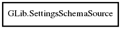

GLib.SettingsSchemaSource Reference Manual
Packages
gio-2.0
GLib
SettingsSchemaSource
get_default
SettingsSchemaSource.from_directory
lookup
ref
unref
SettingsSchemaSource
Object Hierarchy:

Description:
public
class
SettingsSchemaSource
Namespace:
GLib
Package:
gio-2.0
Content:
Static methods:
public
static
unowned
SettingsSchemaSource
get_default
()
Creation methods:
public
SettingsSchemaSource.from_directory
(
string
directory,
SettingsSchemaSource
? parent,
bool
trusted)
throws
Error
Methods:
public
SettingsSchema
lookup
(
string
schema_id,
bool
recursive)
public
SettingsSchemaSource
ref
()
public
void
unref
()